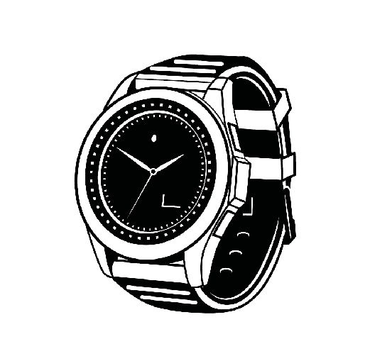

This particular model, a reference 15510ST, features a 41mm stainless
steel construction, a stunning deep navy blue Grand Tappisserie dial
with applied luminous baton indices with a matching handset, and
Audemars Piguet's Calibre 4302 automatic winding movement with 70-hour
power reserve.